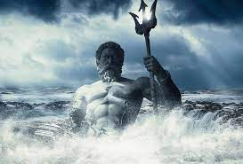
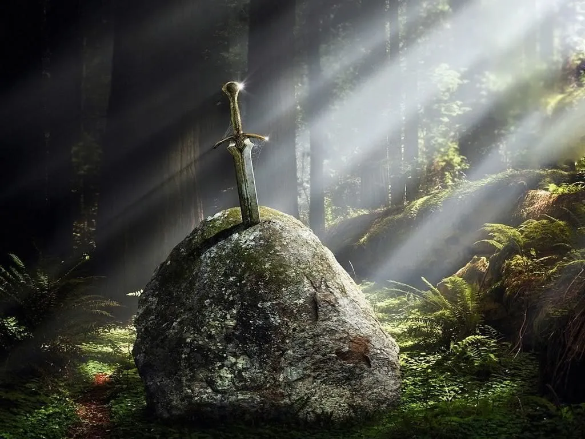

Los Rayos de Zeus son un arma poderosa y devastadora, pueden destrozar montañas y matar a los
Titanes.
Los rayos fueron creados por los cíclopes y dados a Zeus como un regalo, después de que él los
liberó del Tártaro. A su vez, Kratos recibió los rayos como un regalo en su lucha contra Ares.
Durante la Gran Guerra, Zeus usó sus rayos para crear la Espada del Olimpo, y con ella desterró a los Titanes al Tártaro. Miles de años más tarde se utilizan los rayos para destruir la ciudad de Esparta, y los utilizó en su lucha contra Kratos.
El Tridente de Poseidón es un elemento que obtiene poseidon con el cual controla de manera mas fluida su poder.
Uno de los símbolos principales del dios del mar Poseidón era el tridente. Él utilizó el tridente como su arma y también podía utilizarlo para crear tormentas eléctricas y fuertes mareas. El tridente de Poseidón fue creado por los cíclopes y dado a Poseidón como un regalo a su hermano Zeus por haberlos liberado del Tártaro.
Excálibur es el nombre más aceptado de la legendaria espada del Rey Arturo, a la que se le han atribuido diferentes propiedades extraordinarias a lo largo de las numerosas versiones del mito y las historias subsiguientes.
Según Franklin R. Warren, la fuente más antigua que habla de la espada empuñada por el primer Rey de los britanos es el libro Historia de los reyes de Britania, de Geoffrey de Monmouth, escrito hacia 1130, pero ahí no se menciona que se liberase de la piedra. Algunos años antes, sin embargo, los monjes de Cluny habían divulgado la leyenda del caballero San Galgano (probablemente Gawain o Galván), que contiene elementos que coincidieran tales como la espada insertada en la piedra, que aparece por vez primera en la materia artúrica en el Merlín de Robert de Boron.